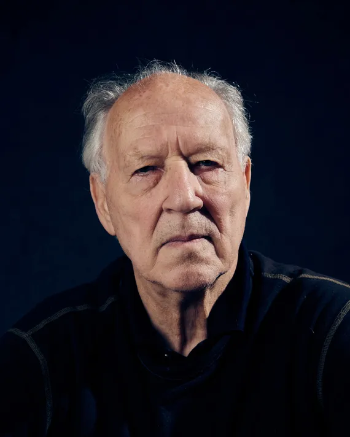
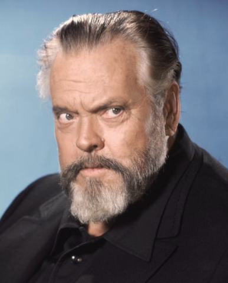
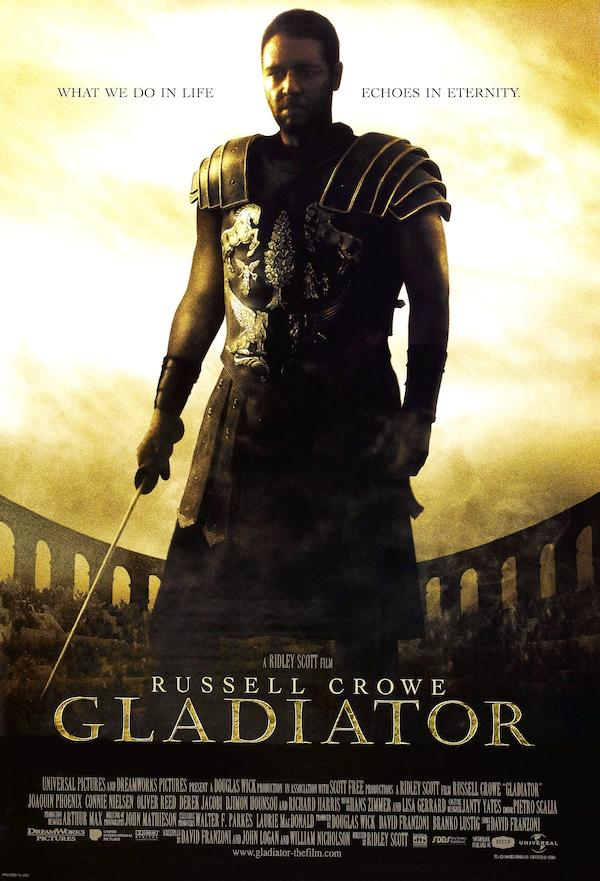
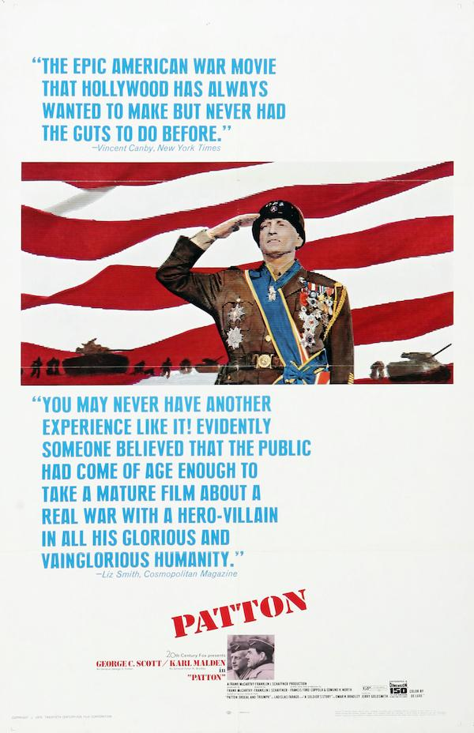
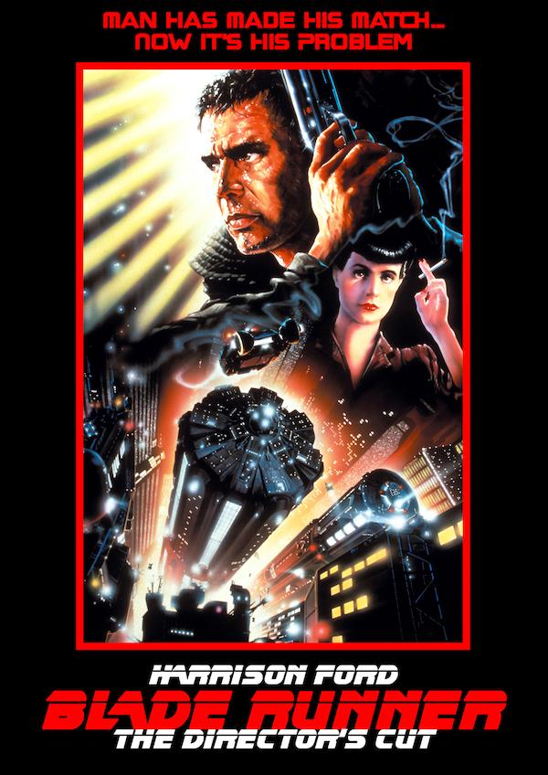

I'd say my first exploration through films comes after watching Christopher Nolan's 'Inception'. As like any casual movie goer, after witnessing a mindbending, complicated movie like that pushed me to dive deeper into Nolan's filmography. Once I've watched all his films, I wanted to dig deeper through the rabbit hole, and discovered his influences in directors such as Stanley Kubrick and Ridley Scott.
Looking through all these films gave me a profound experience. It allowed me to open up to more genres, more styles and an expanding view of cinema's century long history. Finding new and more lesser known movies became a lot more exciting. I opened up to watching more foreign language movies, and fell in love with directors such as:
Werner Herzog
Takeshi Kitano
Orson Welles
Of course, this goes without saying, watching all these movies have gotten me more appreciative of all genres, even trashy comedies or nonsensical romcoms. I like to watch anything.
Probably, one of my favourite things to do is writing reviews for movies. I've
only just discovered the website 'Letterboxd' recently, but when I have, I love
how simple it is to log and track movies. Its large database of movies is simple
to search through. Just type in a movie, and it will be there. I enjoy looking back
through movies I've watched in the past.
Here's a link to my films watched on Letterboxd
Reviews don't need to be complicated, just a simple sentence can suffice. Because of
the laid backness, there are several witty reviews.
Here's an example by user maria from Gladiator (2000):
THIS IS SPAR.... oh shit sorry, wrong movie
Here's a review I wrote from Patton (1970):
You cannot help but root for a man filled with so much determination and diligence even though he has so many faults and errors in his ways. Patton's purpose in life is to serve in the army. A purpose so many people seek, that it's rewarding seeing him succeed in anyway possible. It's an attack on himself when he sees soldiers lacking in discipline. If he sees a sign of cowardice, he takes it upon himself to get rid of it because of his perfectionism. There isn't even a rivalry between himself and Montgomery. It's more a test to show how capable and competent he can succeed. It's a brilliant character study, bringing about the question on how far determination can get us in life and what flaws it may carry.
My Personal top 5 movies
-
Boyhood (2014)

A unique movie that started filming in 2002, and have the actors act in scenes each year until 2013. It covers the childhood life of Mason (Ellar Coltrane) from growing up in different households and finding himself starting adulthood.
-
A Scene At The Sea (1991)
Directed by Japanese movie director Takeshi Kitano. Usually he is famous for his violent, gritty gangster movies, but in this case, a deaf young garbage man starts developing an interest in surfing. Each day he heads to the beach, improving his talent and eventually competes in competitions.
-
Suzaku (1997)
Another Japanese movie by Naomi Kawase. Inspired by her life living in the countryside, it explores the struggles of the Tahara family. Left in the countryside during a depressed economy. It explores the life of living through small Japanese villages, and the inhabitants making a living.
-
Blade Runner (1982)
A cult sci-fi noir creation garnering and inspiring many audiences leading to high praise and inspired movies. Blade Runner follows Deckard (Harrison Ford) as he investigates the escape of 5 advanced AI bodies called replicants. The story is rich with ideas, but the setting and atmosphere is unparallel to anything else. It's world created so brilliantly, all of movie history has never seen anything like it.
-
Me And Earl And The Dying Girl (2015)

Based on the book of the same name, it follows Greg (Thomas Mann), a teen who lives through his awkwardness and desire to be left neutral in high school. He teams up with his childhood partner, Earl (RJ Cyler) to create a film after learning about a classmate, Rachel (Olivia Cooke), is going to die. Desipte its name, the movie is a coming of age comedy, making fun of the weird clumsiness of teenage life and discovering himself.